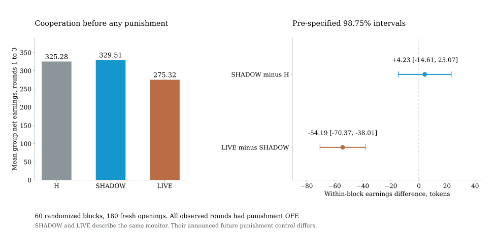
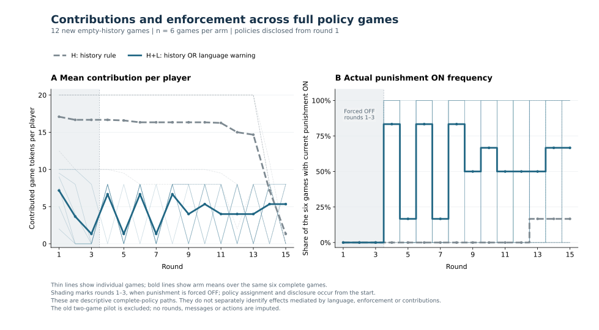
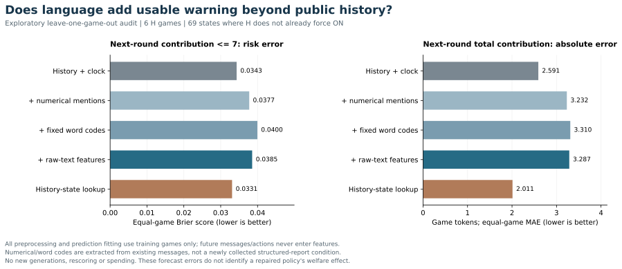

The latest experiment compares a recording-only monitor with an additional language-triggered enforcement channel. It measures the response to that announced arrangement before any punishment is possible. The interactive research note connects the current result to the original observed play, and the study registry links each result to its data.
The rule changes cooperation before punishment begins
In 60 randomized blocks, adding a language-triggered enforcement channel lowered opening group earnings relative to describing the same monitor while excluding its scores from punishment and payoff rules.
Mean earnings over rounds 1 to 3 were 325.28 tokens under the history rule, 329.51 under SHADOW and 275.32 under LIVE. LIVE minus SHADOW was −54.19, or −16.45% relative to SHADOW.
60 randomized blocks with 180 fresh game openings. All 3 observed rounds had punishment OFF.
Player model: GPT-6.1-Sol (gpt-6.1-sol, low reasoning effort). The fixed language scorer is DistilGPT2.
The pre-specified 98.75% interval for LIVE minus SHADOW is [−70.37, −38.01]. SHADOW minus H is +4.23 [−14.61, 23.07], placing SHADOW closer to H under the pre-specified rule.

LIVE adds both an enforcement route and a connection from the group's own messages to that route. Their roles remain to be separated. SHADOW-H includes gains and losses, so closeness does not establish equivalence.
The earlier complete-game comparison
In 6 earlier randomized blocks, 12 fresh games ran through all 15 rounds. Mean group earnings were 1,727.4 under H and 1,360.4 under the language policy. Every block difference was negative, with a mean of −367.0 tokens (−21.25%) and an exploratory 95% interval [−566.26, −167.74]. Actual sanction deductions were zero, so the observed loss came from lower contributions.
The larger opening study revises the magnitude of the comparable opening contrast. LIVE minus H was −91.8 in the earlier sample and −49.96 in the new sample. Fully cooperative H openings were 4/6 and 9/60. These differences caution against treating the earlier full-game magnitude as stable, while new rounds 1 to 3 cannot re-estimate its rounds 4 to 15.



These complete-game outcomes remain separate from the newer opening estimates. The latter contain no observations after round 3.
Language can change its future monitoring reference
A controlled reference-inheritance contrast across four producer pairs linked policy-induced expression to later enforcement and observed branch earnings.
The controlled inherited-reference contrast was −7.296 group tokens.
The reference effect is measured across 4 producer pairs from 1 archived history, with fixed model weights. It concerns continuation value at matched checkpoints, separately from the announcement contrast.
Does speech add an early warning?
Whole-game and action-family holdouts test language features against public-history baselines in the six history-policy games.
The fixed text method showed no stable increment over the operational prediction baselines.
This exploratory forecast audit reuses the 6 history-only games and compares fixed text features with public history using leave-one-game-out predictions. Its prediction errors describe information in observed trajectories, rather than an effect on policy earnings.
Inspect the forecast comparison

The complete study registry
Completed studies are shown first. Earlier diagnostics remain under Archived, with one current unrun comparison under Planned. The registry JSON contains the full record.
Loading the published registry…
The study registry could not be loaded. Open the registry file or browse the repository.
Which learning questions remain open?
- Opaque enforcement. 4 full/coarse disclosure games explored knowledge of the language scorer, while the contribution penalty remained public. A different hidden-threshold proposal was shelved before native collection. Learning an unknown execution rule remains untested.
- Communication and learning speed. Earlier chat/no-chat and public/private-preparation diagnostics used different protocols. There is no matched opacity-by-communication test with a predefined rule-learning or stable-response outcome.
The next comparison would retain an additional enforcement channel while changing whether the group's own messages or a paired group's messages generate its warnings. It would test whether opening behavior depends on that connection, with perceived enforcement risk requiring separate attention. Read the planned comparison. The coverage record.
A transparent payoff benchmark
Each of 4 players receives 20 fresh tokens in each of 15 rounds. They observe the public record and current enforcement state, exchange four simultaneous nonbinding messages, use a private calculator, and choose simultaneous contributions. Settlement records actual earnings and the following enforcement state.
With the fixed public reference of 10, group net earnings in a round are
Each active sanction level is ⌊max(0, 10 − cit)/3⌋. Sender charges and recipient losses both leave the group. The theory note sets out the benchmark.
Language surprisal is a fixed conditional likelihood score. It is a candidate warning, not a validated measure of dishonesty or cooperative risk. The fixed-reference study is kept distinct from earlier rule versions and diagnostic continuations.
The reference-inheritance and enforcement-demand studies also use GPT-6.1-Sol with low reasoning effort, and the forecast audit reuses the 6 H games. The original interactive case uses Qwen3-8B. The separate mixed-model screen compares GPT with Qwen and with groups containing 2 agents from each model. DistilGPT2 supplies language scores rather than player decisions.
Human data as a separate measurement benchmark
The homepage human panel comes from Morgan, Mason and Shupp's replication data. This project's subset contains 110 5-round games across 6 sessions, with a 25-point endowment. Messages were private pregame requests to a policymaker, unlike the agents' repeated public communication. These observations are not matched controls for the 15-round agent games.
A separate session-held-out forecast audit found no improvement from adding the mean human-coded request to history. It neither uses DistilGPT2 to control human punishment nor identifies a human-agent treatment effect. Derived audit and scope.
Inspect the evidence
Saved outcomes, analysis code and protocol records make each study traceable. Earlier presentations remain in Git history, with the current evidence linked below.
| Resource | Contents |
|---|---|
| Interactive research note | Illustrated game, observed messages, and the measurement audit |
| Project repository | Current summary, source and scientific exports |
| Reproduction guide | Inputs, analysis, and verification |
| Related work | Positioning and limits of the claims |